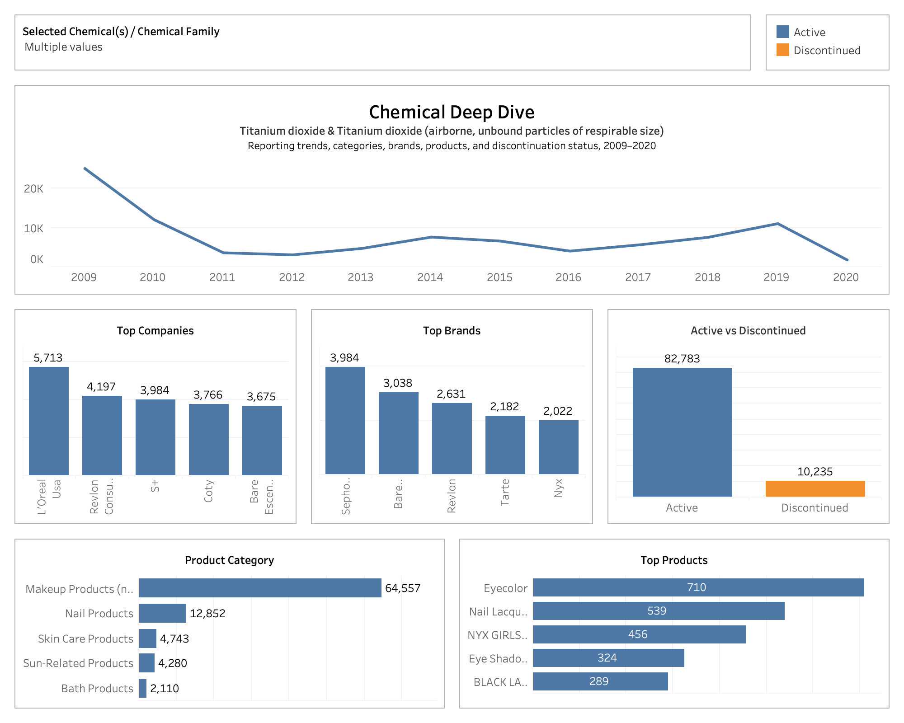
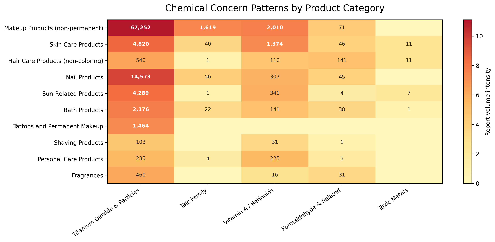

Chemicals in Cosmetics
A data analysis project using cosmetic chemical reporting data to identify chemical groups, product categories, and product variants that may require closer safety review.
Overview
This project analyzed cosmetic products reported to the California Safe Cosmetics Program. The goal was not to label products as unsafe, but to use historical reporting data as a prioritization tool for product safety review.
Business Problem
Cosmetic companies need a data-driven way to identify which products, categories, and ingredients should be reviewed first. Chemical concern depends on more than reporting frequency; it also depends on product form, exposure route, dosage, contamination risk, and regulatory context.
Data Cleaning & Preparation
Cleaning Steps
- Converted date columns into proper datetime format.
- Standardized product, brand, category, and chemical names.
- Handled missing brand names using company names where needed.
- Removed duplicates and unnecessary ID fields.
Feature Engineering
- Created chemical review groups by concern type.
- Created product-level keys to reduce double counting.
- Grouped products by chemical burden: 1, 2–3, and 4+ chemicals.
- Classified products as active or discontinued.
Analysis Summary
Chemical-Level Analysis
Reviewed top reported chemicals and grouped them by concern type: inhalation exposure, contamination, dosage, byproduct exposure, and toxic metal contamination.
Product-Level Analysis
Analyzed product variants with multiple selected concern chemicals and checked whether high-complexity products were active or discontinued.
Category-Level Analysis
Compared product categories to identify where multiple selected concern chemicals were more common, especially in pigment-heavy or long-wear products.
Market & Regulation Context
Connected historical reporting trends to cosmetic safety regulation, consumer transparency, and product reformulation considerations.
Key Findings
- Titanium dioxide made up the largest share of reported chemical entries.
- Frequency alone does not define risk; product form and exposure route matter.
- Talc concern is mainly linked to possible asbestos contamination.
- Retinoid concern is dosage-based, especially for pregnancy-related exposure.
- Formaldehyde-related chemicals are important in heat-treated hair products.
- Products with 4+ selected concern chemicals were mostly marked active.
Visualizations

Dashboard overview showing chemical reporting patterns and key findings.

Heatmap showing selected chemical concern groups across product categories.
Recommendations
- Prioritize products with 4+ selected concern chemicals for closer review.
- Review chemicals by concern type, not only by reporting frequency.
- Use category-specific review for makeup, skincare, hair care, and pigment-heavy products.
- Strengthen supplier documentation for talc, pigments, minerals, and possible contaminants.
- Improve consumer communication through clearer ingredient and exposure guidance.
Limitations
- The dataset ends in 2020 and may not reflect current formulas.
- The data shows reported chemical presence, not concentration or actual exposure.
- Product status may be outdated.
- Current product labels and safety documents are needed for final verification.